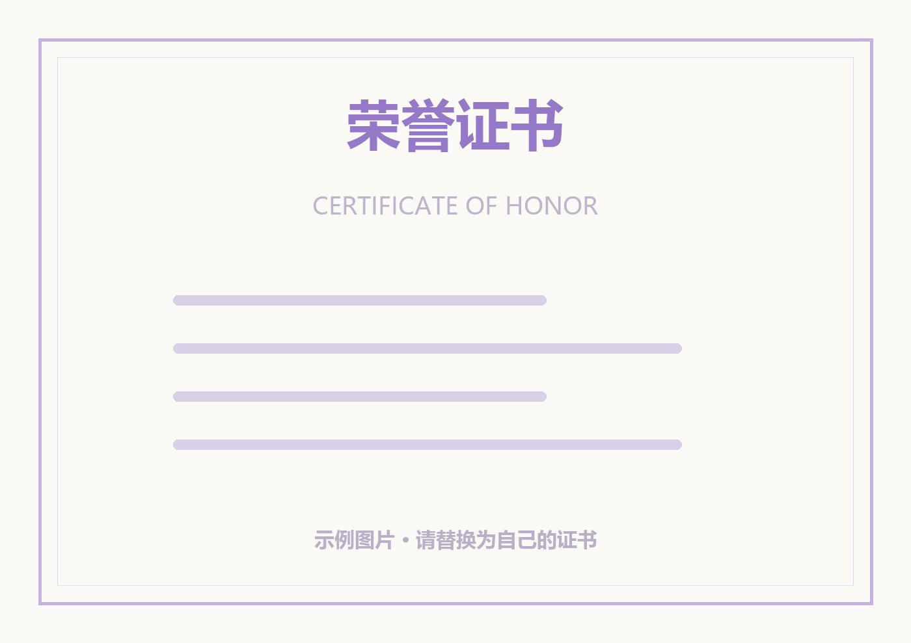
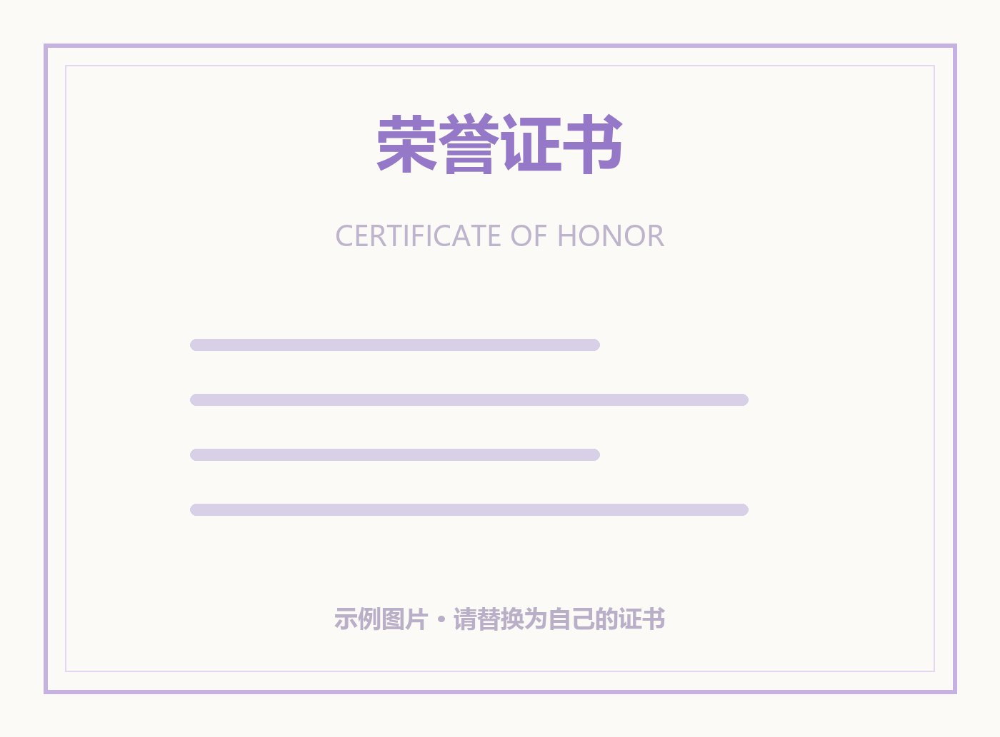
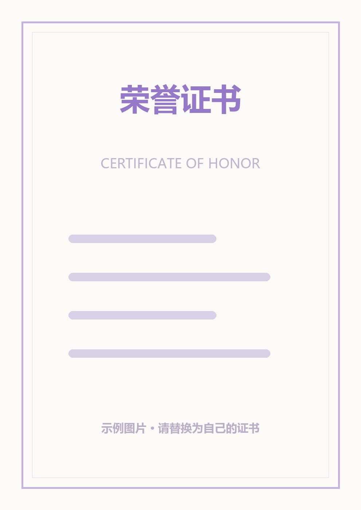

把小程序截图放到
img/zhiyin.png
从需求、设计到上线部署都跟着走了一遍。下面是我最想聊的两个作品。
img/zhiyin.png
img/ 就行
比赛带来的不只是证书，还有把项目从 0 推到上线的那套流程。



img/avatar.jpg
四个阶段，每一步都留下了一个能拿出来的东西。
接触 Python 与 Web 基础，把课程作业当成真实项目来做，养成先想清楚结构再动手的习惯。
干事→副部长→理事长，一边参与社团运营，一边把计算机网络、数据库这些课打牢。
作为团队负责人兼前端主导，把一款 AI 小程序从方案推到上线，负责页面、交互与整体进度。
项目里最让我有成就感的是把问题找出来，于是开始系统学测试用例与缺陷管理，准备走测试方向。
项目里踩过的坑、想清楚的设计，以及那些没地方放的碎碎念。